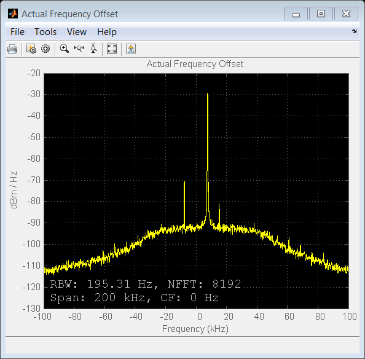

Frequency Offset Calibration Receiver with USRP® Hardware
This example shows how to use the Universal Software Radio Peripheral® devices exploiting SDRu (Software Defined Radio USRP®) System objects to measure and calibrate for transmitter/receiver frequency offset at the receiver using MATLAB®.
The USRP® Transmitter sends a sine wave at 100Hz with the MATLAB script, sdruFrequencyCalibrationTransmitter.m, to the USRP® receiver. The USRP® Receiver monitors received signals, calculates the transmitter/receiver frequency offset and displays it in the MATLAB command window for calibration with the MATLAB script, sdruFrequencyCalibrationReceiver.m.
Contents
Introduction
The example provides the following information about the USRP® transmitter/receiver link:
- The quantitative value of the frequency offset
- A graphical view of the spur-free dynamic range of the receiver
- A graphical view of the qualitative SNR level of the received signal
To calibrate the frequency offset between two USRP® devices, run sdruFrequencyCalibrationTransmitter.m on one USRP® radio, and while simultaneously running sdruFrequencyCalibrationReceiver.m on another USRP® radio. The CenterFrequency property of the SDRu transmitter and receiver System objects should have the same value.
To compensate for a transmitter/receiver frequency offset, add the displayed frequency offset to the Center Frequency of the SDRu Receiver System object. Be sure to use the sign of the offset in your addition. Once you've done that, the spectrum displayed by the receiver's spectrum analyzer System object should have its maximum amplitude at roughly 0 Hz.
Please refer to the Simulink® model sdrufreqcalib_rx.mdl for a block diagram view of the system.
Hardware Requirements
To run this example, ensure that the center frequency of the SDRu Transmitter and Receiver System objects is within the acceptable range of your USRP® daughter board and the antennas you are using. Please refer to Getting Started for details on configuring your host computer to work with the SDRu transmitter and receiver System objects.
Code Architecture
The Frequency Offset Calibration Receiver MATLAB script, sdruFrequencyCalibrationReceiver.m, uses three System objects: comm.SDRuReceiver, a coarse frequency offset object, and a dsp.SpectrumAnalyzer to show the power spectral density of the received signal.
Initialization
Baseband and RF configuration
rfRxFreq = 1.85e9; % Nominal RF receive center frequency bbRxFreq = 100; % Received baseband sine wave frequency prmFreqCalibRx = configureFreqCalibRx(rfRxFreq, bbRxFreq); % This example communicates with the USRP(R) board using the SDRu receiver % System object. You can supply the IP address of the USRP(R) radio as an % argument when you construct the object. The IP address can be any address % within the same sub-network as the host computer. The parameter % structure, prmFreqCalibRx, sets the CenterFrequency, Gain, % InterpolationFactor, SampleRate, and FrameLength arguments. hSDRuRx = comm.SDRuReceiver(... 'IPAddress', '192.168.10.2', ... 'CenterFrequency', prmFreqCalibRx.RxCenterFrequency,... 'Gain', prmFreqCalibRx.Gain, ... 'DecimationFactor', prmFreqCalibRx.DecimationFactor,... 'SampleRate', prmFreqCalibRx.Fs, ... 'FrameLength', prmFreqCalibRx.FrameLength,... 'OutputDataType', prmFreqCalibRx.OutputDataType) % Create a coarse frequency offset estimation object to calculate the % frequency offset. The coarse frequency offset object performs an FFT on % its input signal and finds the frequency of maximum power. This quantity % is the frequency offset plus the reference sine wave frequency of 100 Hz. hCFO = CoarseFrequencyOffset(... 'FFTSize', prmFreqCalibRx.FocFFTSize ,... 'SampleRate', prmFreqCalibRx.Fs); hSpectrumAnalyzer = dsp.SpectrumAnalyzer(... 'Name', 'Actual Frequency Offset',... 'Title', 'Actual Frequency Offset', ... 'SpectrumType', 'Power density',... 'FrequencySpan', 'Full', ... 'FFTLengthSource', 'Property',... 'FFTLength', prmFreqCalibRx.SpeAnaFFTLength,... 'SampleRate', prmFreqCalibRx.Fs, ... 'YLimits', [-130,-20],... 'SpectralAverages', 50, ... 'FrequencySpan', 'Start and stop frequencies', ... 'StartFrequency', -100e3, ... 'StopFrequency', 100e3,... 'Position', figposition([50 30 30 40]));
hSDRuRx =
System: comm.SDRuReceiver
Properties:
IPAddress: '192.168.10.2'
CenterFrequencySource: 'Property'
CenterFrequency: 1850000000
ActualCenterFrequency: 1850000000
LocalOscillatorOffsetSource: 'Property'
LocalOscillatorOffset: 0
ActualLocalOscillatorOffset: 0
GainSource: 'Property'
Gain: 30
ActualGain: 30
DecimationFactorSource: 'Property'
DecimationFactor: 500
ActualDecimationFactor: 500
OverrunOutputPort: false
SampleRate: 200000
OutputDataType: 'double'
FrameLength: 4096
EnableBurstMode: false
Stream Processing
rxSig = zeros(prmFreqCalibRx.FrameLength *... prmFreqCalibRx.TotalFrames, 1); radio = findsdru(hSDRuRx.IPAddress); if (strcmp(radio.Status,'Success')) for iFrame = 1 : prmFreqCalibRx.TotalFrames [rxSig, len ] = step(hSDRuRx); if len > 0 % Display received frequency spectrum. step(hSpectrumAnalyzer, rxSig); % Compute the frequency offset. offset = step(hCFO, rxSig); % Print the frequency offset compensation value in MATLAB command % window. offsetCompensationValue = -offset end end else warning(message('sdru:sysobjdemos:MainLoop')) end % Release all System objects release(hSDRuRx); clear hSDRuRx release(hCFO);
offsetCompensationValue =
4.2e3
 Conclusion
In this example, you used Communications System Toolbox™ System objects to build a receiver that calculates the relative frequency offset between a USRP® transmitter and a USRP® receiver.
Appendix
The following scripts are used in this example.
Copyright Notice
Universal Software Radio Peripheral® and USRP® are trademarks of National Instruments Corp.